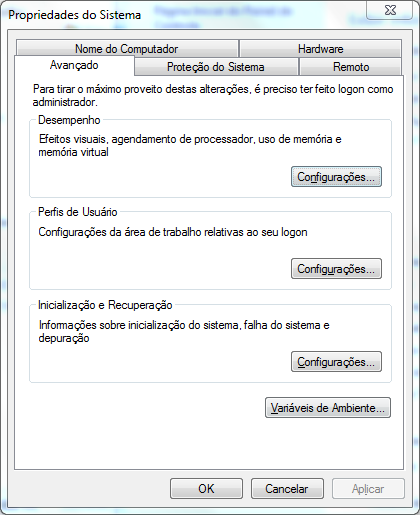
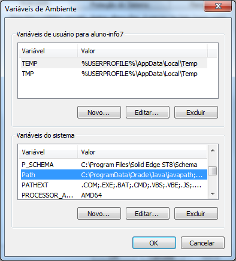
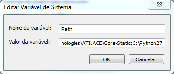
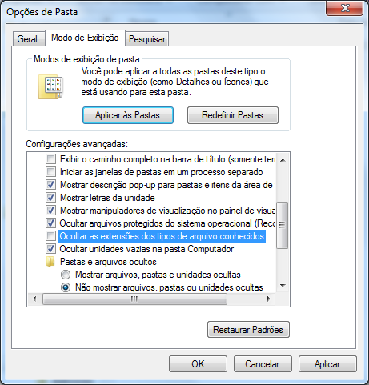

Pressione a tecla do logo windows e digite "exibir configuracoes avançadas do sistema" e pressione ENTER
depois clique em "variaveis de ambiente"
edite a variável "Path"
e coloque o caminho para a pasta do python, após um ponto e virgula(;), no final do valor atual da variavel path
Pressione a tecla Windows, digite "opções de pasta de pesquisa", e pressione ENTER.
Desmarque a opção "ocultar as extensões dos tipos de arquivos conhecidos"
